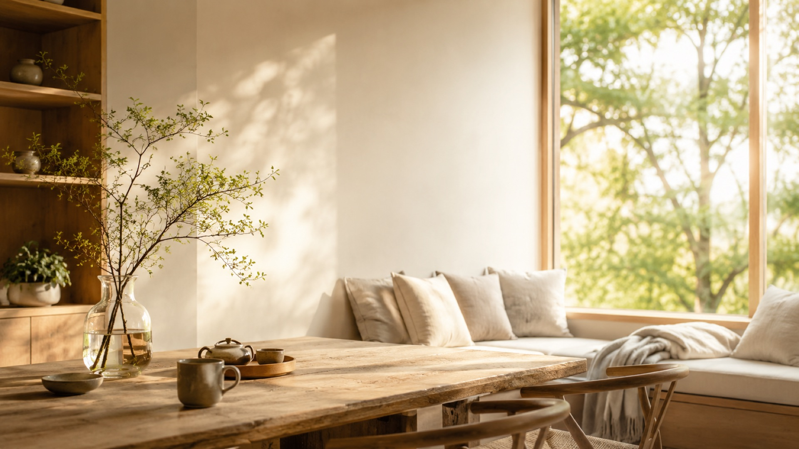
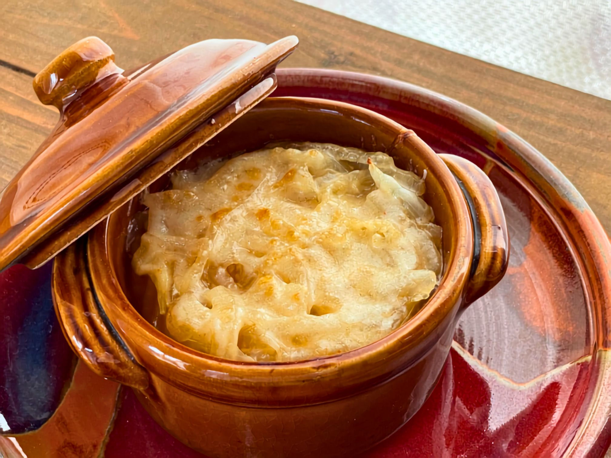
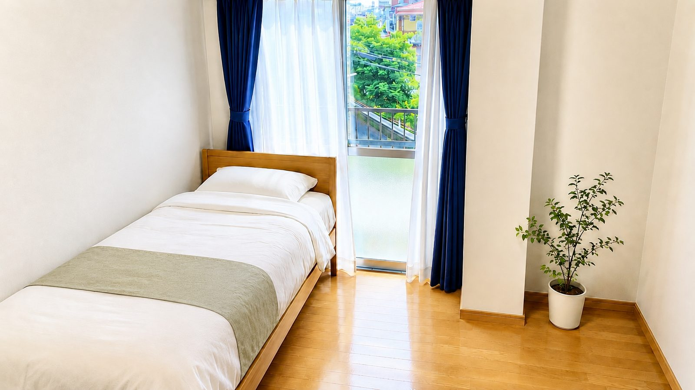
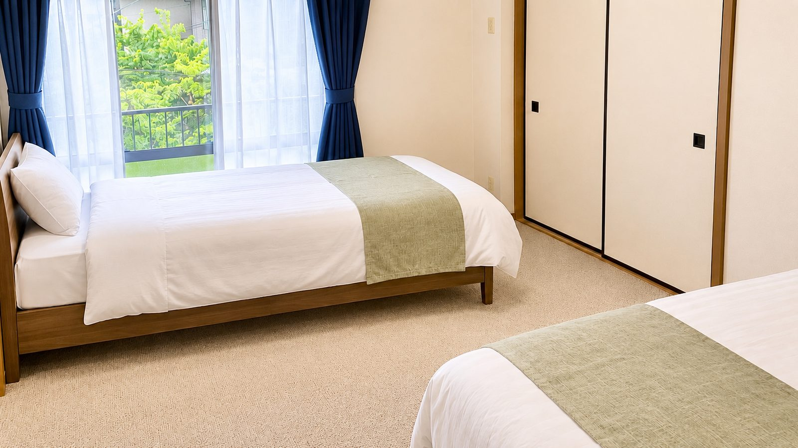

生と死・メメントモリ
限りある
人生の
3–5
人で囲む、対話の時間。
一泊二日。
余韻まで、分かち合う。
今回の中心となるのは、映画『THE CHOICE TO DIE ～メメントモリに生きる～』です。
この
しかし、
映画を
自分自身の
そして、
一般上映会では、
今回の
話すことも、
誰かの
そして、
その日、
私自身も、
2027年上半期、全5回。
すべての回で、共通のテーマを深めます。
各回とも基本テーマとプログラムの構成は共通です。参加可能な日程をお選びください。
少人数での開催のため、定員に達した日程から受付を終了します。
2026年11月・12月開催分は、満室につき受付を終了しています。
以下の
お申し込みの
限りある
人生の
困難を
仕事、
本当の
社会や
芸術、
ミュージカルや
知識を
私が
また、
特定の
どのような問いを抱いていても。
その日集まる方々と、共に考えていきます。
映画の余韻を、同じ食卓へ。
写真はイメージです
会場は、ホリスティックカレッジ・オブ・ジャパン。
ここは豪華なホテルではありません。
けれど、
13:00〜14:00にチェックイン。14:00から、映画や対話を通して自分と向き合う時間を過ごします。
朝食と静かな時間を味わいながら、日常へ戻る準備をしていきます。11:00頃終了予定です。

空間イメージ
写真はイメージです夕食と
身体にやさしい食は、
心にも静かな変化をもたらします。
食べることは、単なる栄養補給ではありません。自分の身体を感じ、心を整え、今ここに戻ってくるための大切な時間です。
カレッジ3階のシンプルな客室で宿泊します。
豪華さではなく、静けさと安心感を大切にしています。
翌朝、少しだけ心が軽くなっていること。
それが、このリトリートの願いです。

カレッジ3階の客室
自分らしい日常へ
写真はイメージです
「これは、自分のための時間かもしれない」
そう感じた方のための場所です。
「メメントモリ」とは、
人生の
そのような
そして、
知識を
ぜひ、
ホリスティックカレッジ・オブ・ジャパン
校長 平田進一郎
映画を観て、語り合い、同じ時間を過ごす。
ご参加を希望される方は、こちらからお申し込みください。
受領後、
参加日程と
ご不明な点がある方は、お問い合わせも受け付けています。